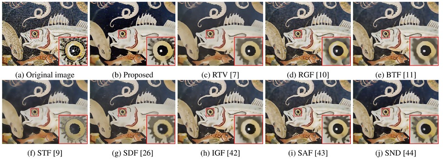

Fernando J. Galetto Guang Deng Mukhalad Al-nasrawi Waseem Waheed
IEEE Open Journal of Signal Processing (OJ-SP), 2021
Abstract: Edge-aware smoothing is an essential tool for computer vision, graphics and photography. In this paper, we develop a new and efficient local weighted average filter for edge-aware smoothing. The proposed filter can use guidance information which permits an iterative filtering process. Since the weights of the proposed filter depend on the local variance, the implementation requires linear filters only, leading to O(Npix) computational complexity. We also present statistical analysis and simulations which provides new insights into its computational efficiency and its relationship with the bilateral filter. The performance of the proposed filter is comparable to those state-of-the-art filters in many applications including: edge-preserving smoothing, compression artifact removal, structure separation, edge extraction, non-photo realistic image rendering, salience detection, detail magnification and multi-focus image fusion.
Paper: [pdf]
Code: [Matlab Code] [Github Repository]
Sample result:
